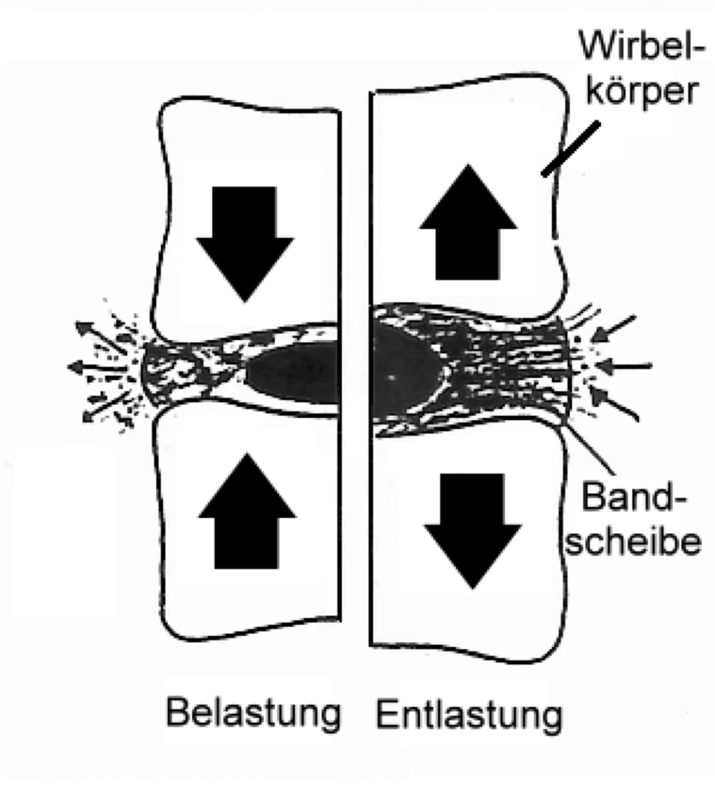
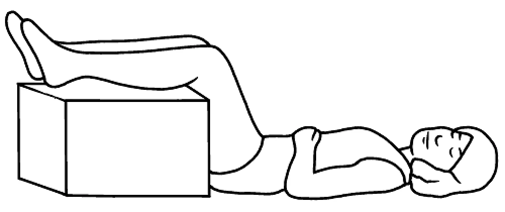
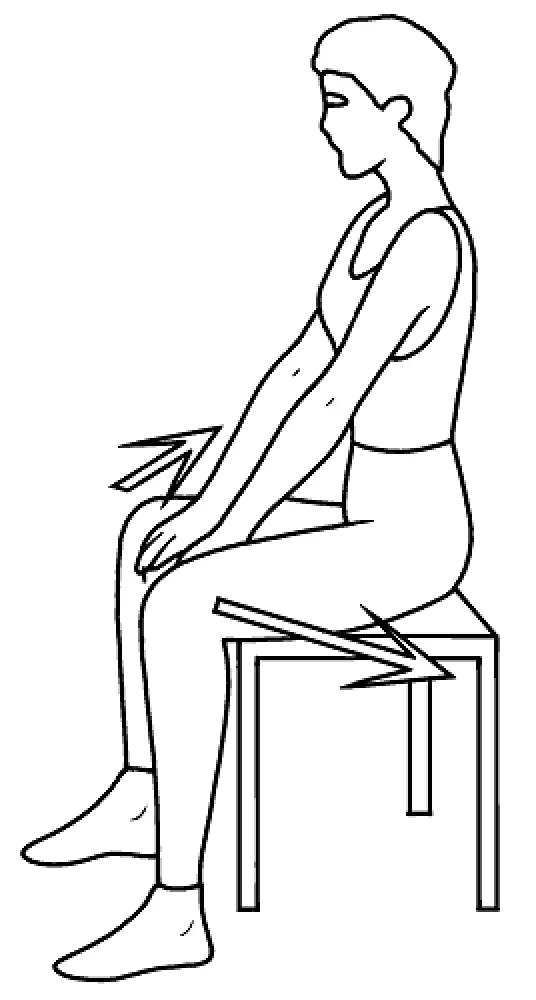
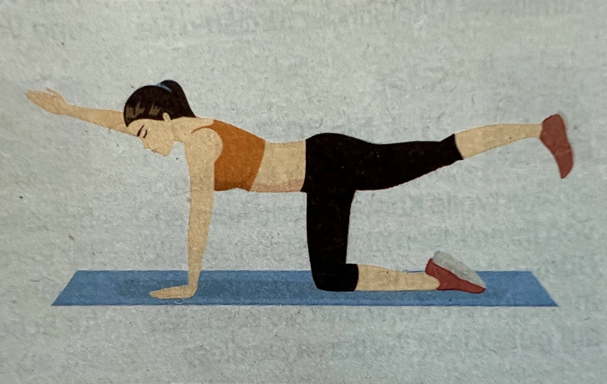
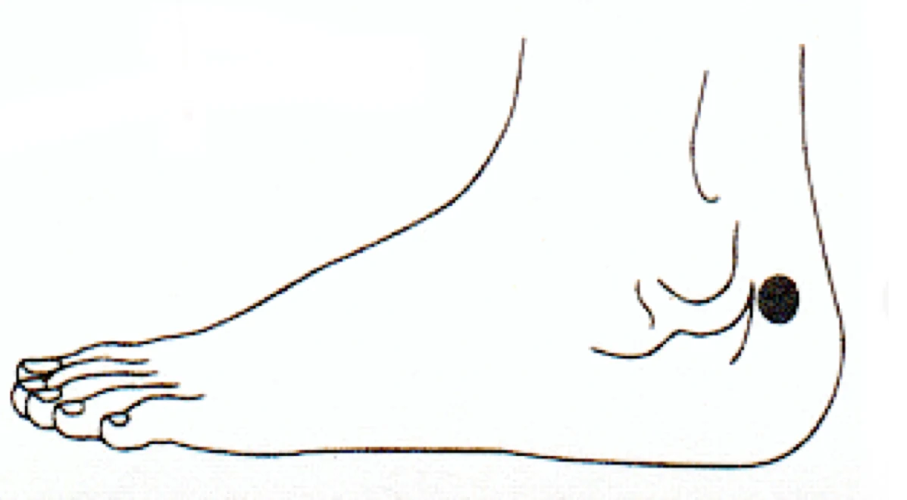

Bandscheiben
Das Kreuz mit dem Kreuz
Vor allem ist es notwendig, sich über den Zustand der Wirbelsäule zu informieren, denn viele Krankheiten gehen von ihr aus. (Hippokrates)
ALLGEMEIN: Unser Rücken hat es heutzutage schwer, gesund zu bleiben: Bewegungsmangel in Verbindung mit physischem Stress ist der größte Generator für Rückenschmerzen. Auch einseitige Überlastungen bestimmen vorwiegend unseren Tagesablauf. Oft trägt das Kreuz die Folgen unseres veränderten Lebensstils. Zahlreiche Erwachsene (ca. 30 %), aber auch Schulkinder leiden heute schon unter Rückenschmerzen (Bänke wachsen nicht mit, Schulranzen sind oft viel zu schwer, sollen nicht mehr als 10 % vom Gewicht des Kindes betragen). Ein Viertel aller Fehlzeiten ist allein darauf zurückzuführen (BKK). Gerade deshalb haben die Vereinten Nationen unser Jahrzehnt für „Knochen und Gelenke“ ausgerufen. Da eine Verschiebung der Wirbelsäule nicht nur Rücken- und Gelenkschmerzen, sondern auch Probleme mit allen inneren Organen verursachen kann, ist es ratsam, die Wirbelsäule von einem Orthopäden oder Dorn-Therapeuten einrichten (nicht einrenken) zu lassen. Gute Schuhe tragen. Sie beeinflussen den gesamten Bewegungsapparat. Schlecht sitzende Büstenhalter, tragen Sie Büstenhalter mit breiten, gepolsterten Trägern. Nicht zu oft röntgen lassen. Sie bleiben dadurch länger psychisch krank (Amerikanische Studie).
URSACHEN: Aber auch Darm, Blase, Nieren und Prostata sind oft nicht in Ordnung, Arzt/Heilpraktiker befragen. Organismus entsäuern (siehe Entsäuerung). Säure entzieht den Knochen Kalk, reizt die Nerven, verursacht Schmerzen. Je mehr Säure, desto mehr Schmerzen. Nein sagen lernen. Ein gesunder Egoismus hilft bei Rückenschmerzen.
Sprachrohr der Seele
Neueste Studienergebnisse in Amerika zeigen, dass 50 % aller chronischen, therapieresistenten Rückenschmerzen auf seelische Ursachen (mentale Überforderung/Beruf/Depressionen) zurückzuführen sind. Körper, Geist und Seele sind eine Einheit. Viele bildhafte Ausdrücke wie: Wer Sorgen hat, dem tut der Rücken weh, Das sitzt mir im Nacken, den Kopf einziehen dokumentieren, dass wir in der Muskulatur abspeichern, was wir erleben. Sie ist eine Art Gedächtnis für die Seele. NEIN sagen lernen. Ein gesunder Egoismus hilft auch bei Rückenschmerzen. Wer der Seele etwas Gutes tut, stärkt den Rücken.
Alles was kränkt, macht krank. Willst Du Deinen Körper heilen, so musst Du zuerst den Geist geheilt haben. (Goethe)
Stress ist eine Reaktion des Körpers auf alle Arten von erhöhten Anforderungen. Er sorgt für eine Ausschüttung von Botenstoffen, die unter anderem dazu führen, dass sich die Muskeln anspannen. Wer innerlich verkrampft ist, nimmt automatisch eine verspannte Haltung ein. Auch der Körper selbst kann durch den Schmerz signalisieren, dass er sich vernachlässigt fühlt und mehr Aufmerksamkeit, z.B. mehr Bewegung braucht. Unzufriedenheit am Arbeitsplatz ist der Hauptgrund, warum orthopädisch an sich unkomplizierte Rückenschmerzen oft chronisch werden. Meistens gehen dem depressive Stimmungen, Angst und ein reduziertes Selbstwertgefühl voraus. Bei lang anhaltenden, chronische Rückenschmerzen kann auch eine Bauch-Aneurysma vorliegen, Arzt befragen (Hessischer Rundfunk Service Gesundheit). Bei Rückenschmerzen ohne erkennbaren Grund liegen oft Knochenverdickungen vor, Arzt befragen. Bei Rückenschmerzen ohne erkennbaren Grund liegen oft Knochenverdickungen vor/Arzt befragen. Britische Forscher haben herausgefunden, dass während einer Autofahrt und bei langem Sitzen eine dicke Geldbörse in der männlichen Gesäßtasche die gesamte Statik des Beckens und der Lendenwirbelsäule verändern. Besser ist es, die Börse in die vordere Hosentasche zu stecken oder in der Jackentasche zu verstauen. Eine der häufigsten Ursachen für Rückenleiden bei Frauen, ist ein BH, der nicht passt. Entscheidend für optimalen Tragekomfort ist die richtige Körbchengröße. Ein perfekt passender Büstenhalter stützt nicht nur die Brust, sondern entlastet und schont den Rücken In amerikanischen Studien wurde herausgefunden, dass bei chronischen Rückenschmerzen in 85 % und bei Nacken/Schulterschmerzen sogar in 100 % der Fälle sogenannte Trigger als Schmerzauslöser nachweisbar sind (Therapeut befragen). Schmerzt der untere Rücken, steckt in vielen Fällen das Iliosakralgelenk (ISG) dahinter. Probleme treten häufig infolge von Fehlhaltungen oder einseitigen Belastungen auf, etwa nach langem Sitzen.(Dorntherapeut aufsuchen). Ebenso kann eine Nickel-Allergie zu heftigen Schmerzen führen (Modeschmuck, Euromünzen, Kakaopulver, schwarzer Tee). Bei Frauen muss der Gynäkologe abklären, ob nicht etwa eine Erkrankung im Unterleib vorliegt.
Eine basische/pflanzliche Kost macht den kranken Menschen gesund.
ERNÄHRUNG: Der Weg zur Gesundheit führt nicht durch die Apotheke, sondern durch die Küche. Was immer der Vater einer Erkrankung war, die Mutter war immer eine schlechte Ernährung.. (Chinesisches Sprichwort). Eure Nahrung soll Euer Heilmittel und Euer Heilmittel soll Eure Nahrung sein. (Hippokrates). 2/3 aller Krankheiten sind ernährungsbedingt. (Professor Leitzmann, Uni Gießen).
- Vollkornprodukte, Naturreis, Hirse.
- Sonnenblumenkerne (Vitamin E).
- Gemüse, Kohl, Kartoffeln, Möhren, Bohnen.
- Walnüsse, Sojaprodukte, geschroteter Leinsamen (Phytoöstrogene), Zwiebeln.
- Kirschen, Ananas, Papayas, Tomatenmark.
- Fisch enthält Omega-3-Fettsäuren (Schmerzkiller) und Vitamin D (Öle/Fette).
- Gerstengraupen-Suppe soll mindestens 1 Stunde köcheln (Heilnahrung für den Knorpel).
- Olivenöl, regelmäßig verwendet, senkt das Risiko um 75 % (Uni Athen).
- Bitterschokolade (70 % Kakao).
- Lakritz (nicht bei Hypertonie).
Eine saure Kost macht den gesunden Menschen krank.
MEIDEN: Omega-6-Fettsäuren (Öle/Fette). Produkte aus Weizen bzw. Weißmehl (säuern, enthalten wenig Vitamine/Ballaststoffe).
- Kaffee, Alkohol, Nikotin verengt die Blutgefäße, macht Knochen brüchig.
- Fett erzeugt Fett, macht aggressiv, verursacht Säure. Weniger (60 g/Tag) macht schlank, verlängert das Leben.
- Salz, 1 Teelöffel speichert 1 Liter Wasser/Körper (Übergewicht), entzieht den Bandscheiben Feuchtigkeit (trocknen aus) und den Knochen Kalzium.
- Zucker (alles was süß schmeckt verursacht Säure).
- Eiweiß, (Fleisch, Wurst) verursacht Harnsäure sowie Rötung, Schwellung, Schmerzen in den Gelenken. Tipp: Mehr Fisch, weniger Schweinefleisch essen, es enthält viel Schwefel, wodurch die Wirbel ‚verseifen’ bzw. aus ihrer normalen Stellung gleiten.
- Übergewicht belastet Knochen und Gelenke. Jeder trägt seine eigene Last. Ihm ist es auf’s Kreuz geschlagen.
- Starres Sitzen belastet die Wirbelsäule dreimal so stark, wie der Druck, der im Liegen auf sie einwirkt und ist Gift für den Rücken. Verändern Sie öfter Ihre Position oder noch besser - stehen Sie zwischendurch auf.
- Schuhe dürfen die Füße nicht einengen. Besonders der Fersenbereich sollte durch ein unterstützendes Fußbett gefedert sein. Dieser Teil des Fußes trägt 3/5 des Körpergewichts.
GETRÄNKE: Grundsätzlich viel trinken (nicht bei Herz-Nierenproblemen, Arzt befragen), täglich 30 ml Wasser pro kg Körpergewicht (z.B. 50 kg = 1,5 Liter). Wenn Sie wenig trinken, holt sich der Körper die Flüssigkeit aus den Bandscheiben (man nennt sie auch Wasserkissen). Sie trocknen dadurch aus und verlieren so ihre Pufferkapazität. Studien zeigen, dass 8 Gläser Wasser/Tag Rücken- und Gelenkbeschwerden bis zu 80 % signifikant erleichtern können. Tee aus: Brennnessel, Zinnkraut. Teufelskralle: 5 Minuten kochen, 10 Minuten ziehen lassen, 3 x täglich eine Tasse heiß trinken (herb - mit Honig süßen. Hinweis: Bei Magen- und Darmbeschwerden nicht anwenden). Isländisch Moos weich gekocht mit Orangensaft und Honig gesüßt, davon dreimal täglich 2-3 Esslöffel gut kauen und einnehmen. Bildet neue Gelenkschmiere. Faszien (früher hießen sie Bindegewebe) sind ein flexibles Netz, das unsere Muskeln, Knochen und unser Gewebe überzieht. Bei einem durchschnittlichen Körpergewicht machen die Faszienfasern rund 15-20 kg aus. Faszien speichern Wasser! Können die Fasern gut darin gleiten, sind wir beweglicher. Viel Trinken hilft daher auch bei Rückenschmerzen. Hinweis: Bei allen Faszien-Schmerzen die Leber mitbehandeln. Anmerkung: Raucher verlieren mit jeder gerauchten Zigarette Feuchtigkeit im Körper. Diese fehlt in den Bandscheiben, die eine wichtige Pufferzone zwischen den Wirbelkörpern bilden.
BÄDER: Schwefelbad (Dr. Klopfer®) wirkt durchblutungsfördernd, entzündungshemmend und schmerzlindernd, Heublumen. Eine wärmende Moor-Packung als Kissen/Apotheke ist eine effektive Erste-Hilfe-Maßnahme. Chiliwickel verbessern die Durchblutung und mildern Schmerzen. Die Muskeln werden warm und Verspannungen lösen sich. Ein Tuch mit warmem Wasser anfeuchten, eine klein gehackte Chili darauf streuen und einige Minuten auf den Rücken legen.
THERAPIE: Kein Arzt der Welt kann das leisten, was wir selbst tun können, um gesund zu bleiben. Bewegung ist das beste und preisgünstigste Medikament. Bewegungsmangel muss als große gesundheitliche Bedrohung des 21. Jahrhunderts und als Hauptursache für den enormen Anstieg von Knochen- und Gelenkbeschwerden angesehen werden. Fehlt Bewegung Deinem Rücken, gehst Du bald an Krücken.
Warum ist das so?
Die Bandscheiben - auch Stoßdämpfer des Körpers genannt - liegen zwischen 2 Wirbeln, bestehen aus einem elastischen Ring und einem gelartigen Kern. Nährstoffe können nur dann aufgenommen werden, wenn die Bandscheiben be- und entlastet werden.

Bei Belastung werden Flüssigkeit und Stoffwechselabfallprodukte herausgepresst. Bei Entlastung werden Flüssigkeit und Nährstoffe - ähnlich wie bei einem Schwamm - aufgenommen. Wie aber soll der Körper Flüssigkeit aufnehmen, wenn er die ganze Zeit - z.B. durch zu langes Sitzen am Arbeitsplatz oder vor dem Fernseher - zusammengedrückt wird?
Wer rastet, der rostet
Nur wer aktiv wird, kann auf Dauer schmerzfrei leben. Wer sich bewegt, lebt länger und gesünder. Bewegung fördert die Durchblutung der Gelenkkapsel und die Produktion von Gelenkflüssigkeit. Nur wer selbst aktiv wird, kann auf Dauer schmerzfrei bleiben. Gesundheit ist unbezahlbar - Vorsorge nicht. Gehen Sie mal wieder tanzen. Das ist die beste Möglichkeit, Gelenke und Bandscheiben zu lockern. (Professor Grönemeyer)
Sorgen Sie für einen häufigen Wechsel von Be- und Entlastung, ändern Sie öfters Ihre Sitzposition. Die beste Sitzhaltung, ist immer die Nächste. Formel für Büroarbeiten: 50 % sitzen, 25 % stehen und 25 % bewegen.
Treiben Sie viel Sport
Neben dem Walken und Laufen sind vor allem Sportarten, wie Yoga, Pilates und Tai Chi sehr hilfreich. Das Rückenschwimmen wird zu Recht als die Schwimmtechnik betrachtet, die den Rücken am wenigsten belastet, denn die Auftriebskraft des Wassers reduziert unser Gewicht auf ein Zehntel. An dieser Sportart kommt kein Rückenpatient vorbei. Gehen Sie mindestens einmal wöchentlich schwimmen. Gute Schuhe tragen. Das Schuhwerk beeinflusst den gesamten Bewegungsapparat. Gehen und Laufen sind nicht nur die natürlichsten Formen der Fortbewegung, sondern zählen auch zu den gesündesten und beliebtesten Sportarten unserer Zeit. Das Fahrrad ist ein gutes Sportgerät, um den Rücken zu entlasten. Wichtig ist es, auf eine aufrechte Sitzposition (hoher Lenker) zu achten.
Einfache Übungen:
Stufenlagerung: Mit dieser SOS-Maßnahme können Sie sich eine Menge Tabletten ersparen. Auf den Fußboden legen, Unterschenkel auf einem Stuhl lagern.

Der Winkel zwischen Unter- und Oberschenkel sowie Hüfte sollte je 90° (rechter Winkel) betragen. Hände auf den Unterbauch legen, Gesäß etwas anheben. Etwa 30 Minuten liegen bleiben und dabei, mit geschlossenen Augen, kräftig in den Bauch ein- und ausatmen. Darauf achten, dass der Rücken warm bleibt. Effekt: Gereizte Nerven werden sofort entlastet, die Muskeln entspannen sich und der Schmerz lässt spürbar nach. Zur Stärkung der Rückenmuskulatur machen Sie folgende Übung: Setzen Sie sich auf einen Stuhl oder Hocker und spreizen Sie leicht die Beine.

Drücken Sie dann mit beiden Händen die Knie von innen nach außen, während sie mit gleicher Kraft zurückgepresst werden. So werden alle Muskeln entspannt und gekräftigt.

Vierfüßlerstand einnehmen. Bauch und Rücken anspannen, Kopf gerade halten. Rechten Arm nach vorne, linkes Bein nach hinten strecken. Die Fußspitze zeigt dabei nach unten. Diese Position 10-15 Sekunden halten, dann Arm und Bein wechseln. Dabei gleichmäßig ein- und ausatmen. Pro Seite fünfmal. Gesund gehen und stehen. Meistens machen wir zu große Schritte und lassen den Oberkörper nach vorne fallen. Dadurch lasten 200 % mehr Druck auf der Wirbelsäule. Überprüfen Sie daher immer wieder ihre Körperhaltung. Dazu mit dem Rücken an eine Wand oder einen Türrahmen stellen. Wenn Fersen, Po, Brustwirbel und Hinterkopf die Wand berühren ist alles OK. Prof. Grönemeyer motiviert seine Patienten selbst etwas gegen Schmerzen zu tun, so z.B. Da wo es weh tut („Davos-Methode“) mit dem Tennisball massieren. Alternativ: Retterspitz® Muskelroller benutzen.
10 Regeln der Rückenschule
- Du sollst Dich bewegen.
- Halte den Rücken gerade.
- Gehe beim Bücken in die Hocke.
- Hebe keine schweren Gegenstände.
- Verteile Lasten und halte sie dicht am Körper.
- Halte beim Sitzen den Rücken gerade und stütze den Oberkörper ab.
- Stehe nicht mit durchgedrückten Knien.
- Liege weder mit Hohlkreuz, noch mit Katzenbuckel.
- Treibe Sport, am besten Schwimmen, Laufen oder Radfahren.
- Trainiere täglich Deine Wirbelsäulenmuskeln. Turne bis zur Urne. (Professor Grönemeyer)
Muskeln mögen es warm, Gelenke lieber kalt.
Schmerzen, die durch verspannte Muskeln verursacht werden, reagieren gut auf Wärme. Geeignet sind: Wärmflaschen (jedoch nicht zu heiß), Packungen mit Heublumen, heißen Kartoffeln oder Weizen- sowie Kirschkernkissen. ABC- und Senfpflaster. Heiße Rolle: Handtuch längs falten, zu einem Trichter rollen, heißes Wasser eingießen und vorsichtig auf die schmerzende Stelle auftupfen und nach und nach aufwickeln.
Kälte lindert - Wärme heilt:
Muskel- und Gelenkverletzungen lassen sich am besten mit einem Eisspray oder einem Kältekissen bzw. einem gefrorenen Handtuch (Tiefkühltruhe) lindern. Auflagen von Kohlblättern sind hier sehr zu empfehlen (siehe Wickel). Einreibungen mit: Johanniskrautöl, Aconit Schmerzöl/WALA®. Sonstiges: Ich rate Ihnen einen Dorn-Therapeuten aufzusuchen und eine eventuell bestehende Beinlängendifferenz (Beckenschiefstand bzw. Blockade der Kreuzdarmbeingelenke) beheben bzw. Wirbelverschiebungen einrichten zu lassen. Die Symptome können allgemeine Rücken-, Kopf- und Nackenschmerzen sein, aber auch Beschwerden im Bereich der Schultern und der Kniegelenke. Auch eine AKUPUNKT-MASSAGE nach Penzel® ist hier sehr zu empfehlen. Farbiges Schmerzpflaster (Medi-Taping) kleben lassen, Arzt/Heilpraktiker befragen. Auch das Bett beeinflusst die Rückengesundheit. Am wichtigsten ist ein guter Lattenrost. Dabei geht es darum, wie das Gewicht beim Schlafen verteilt wird. Der Rost soll eine Rumpfzone haben, die am meisten unterstützt, da wir an dieser Stelle am schwersten sind. An den Beinen wiegen wir weniger, der Kopf wiegt dafür etwas mehr. Bei besseren Versionen gibt es die Möglichkeit, Verstrebungen so zu verschieben, dass sie den Rücken perfekt unterstützen. Bei unklaren Rückenschmerzen immer einen Zahnarzt aufsuchen. Es können Störungen im Kiefergelenk (Aufbiss-Schiene aus Weichplastik im Unterkiefer tragen), defekte Kronen, schlecht sitzende Brücke etc. vorliegen. Viele Kreuzschmerzen haben ihre Ursache in Kausystem, also im Zusammenspiel zwischen Ober- und Unterkiefer. Meist wird eine schlecht sitzende Brücke oder eine defekte Krone ausgetauscht, sodass der Biss wieder stimmt (Zahnarzt aufsuchen). Aktuelle Zahlen der Techniker Krankenkasse belegen, dass 85 % aller Bandscheiben-Operationen überflüssig sind. Experten raten daher, zuvor eine Zweitmeinung einzuholen (NDR-Visite vom 24.6.2014).
Akupressur: Blase 60 (er liegt am Fuß und zwar in einer Mulde auf einer gedachten Linie zwischen der Spitze des Außenknöchels zur oberen Fersenbeinkante - siehe Abbildung). Diesen Punkt ca. 1 Minute kreisförmig mit einem Finger sanft massieren.

Wirbelgleiten: Durch die Verschiebung der Wirbel kommt es zur so genannten Spinalkanalstenose. Der Nervenkanal verengt sich mit der Folge von Taubheitsgefühlen, Schmerzen in den Beinen, sie knicken plötzlich weg. Probleme beim Gehen sowie Rückenschmerzen Durch eine Dekompressionsoperation bekommen die Nerven wieder mehr Platz. Dabei handelt es sich um ein minimal invasives Verfahren. Durch einen kleinen Schlitz am Rücken wird mit Miniwerkzeugen der eingeengte Kanal wieder erweitert. (Prof. Jörg Ohnesorge, Orthopäde, Hamburg) Selbsthilfeübung: Mit dem Rücken an die Wand stellen, die Wirbelsäule gerade machen und das Becken nach vorne kippen, bis man die Wand spürt. Jetzt fünf mal kräftig ein-und ausatmen.
MEDIKAMENTE: Bei chronischen Beschwerden Teufelskralle Tropfen/Tabletten, z.B. Pascoe Agil 240mg (nicht bei Magen-Darmbeschwerden). Teufelskralle wirkt schmerzlindernd, entzündungshemmend, durchblutungsfördernd und muskellockernd, insbesondere bei Rückenleiden und chronischem Knorpelverschleiß. Steirocall-comp.® N Tropfen, rheumamed® Salbe. Bei akuten Beschwerden: Brennnessel Präparate (z.B. Natu-lind® Kapseln) oder Weidenrindenpräparate (z.B. Assalix® Dragees), Vitamin E schützt die Bandscheiben, entspannt die Rückenmuskulatur (z.B. Mowivit® Vitamin E600). Magnesium (Entspannung), optimale Kur-Dosis 400 mg täglich. Alternativ: Magnesium phosphoricum D6. Akut 10 Tabletten/Glas in warmem Wasser einnehmen, danach 5 x täglich 2 Tabletten lutschen. Magnesium-Chlorid (33 g in 1 Liter Wasser auflösen), Dosierung: 1 Schnapsgläschen (40 ml) von der zubereiteten Lösung nach dem Frühstück trinken, löst Kalkablagerungen auf. Traumaplant® Salbe, Kytta Schmerzsalbe, mit WALA® Aconit Schmerzöl oder Johanniskrautöl einreiben. Hinweis: ASS-Tabletten nur kurzfristig einnehmen. Sie rauben dem Körper wichtiges Vitamin C (Pyrrhus Sieg), was zur Produktion von Kollagen dringend benötigt wird. Weitere Medikamente/Hinweise siehe Arthrose.